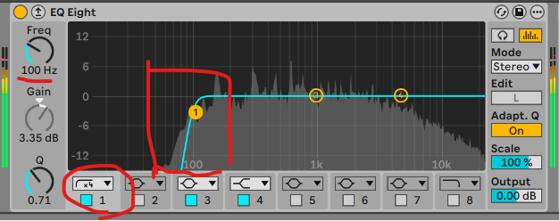
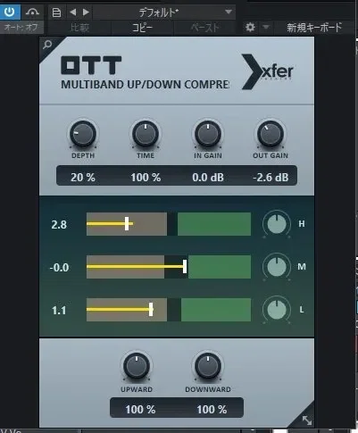
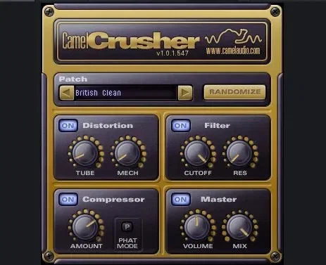
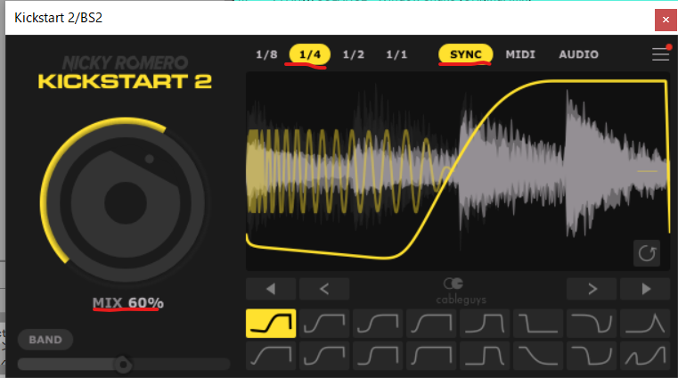

キックと噛み合う
トップベースを作る
前の STEP で、キックが4小節に配置されました。
ここからは、そのキックと噛み合うトップベースを作るフェーズです。
音色と打ち込みを決める
プリセットを選んで整えるだけでいい。
EQでキックと住み分ける
150Hz以下をカット、300Hzと800Hzを+1dB。
サイドチェインでダッキング
Kickstart 2 で Mix 60%。
音色と打ち込みを決める
トップベースの役割は「低域の太さ」ではありません。
ミックスの中で“前に出る輪郭”を作ることです。
だから、音作りに時間をかけない。最短でいくならプリセットを選んで整えるだけが正解です。
Splice 検索ワード
候補は5つ以内に絞る。ジャンルに特化した音がすぐ見つかります。
打ち込みの3原則
打ち込み方は、動画で手を動かしながら
ベースの打ち込みをやれと急に言われても、難しいですよね。安心してください。 単調にならないベースの打ち込み方を、動画で徹底解説しています。
解説動画 ── 「アイデアが出なくて手が止まる」という最悪のパターンを、ここで回避してください。
★ ベースラインをプレゼント
ダウンロードして DAW に貼るだけ。まずはそのまま真似ることから始めてください。
アイデアは、即真似 ＞ 創造的にアレンジ ＞ 自分だけのオリジナルに。
音量基準 ── mvMeter で −1〜−3VU に揃える
 無料
Metering ── この手順で使う
mvMeter2
VU基準で音量を計測する。ベースを −1〜−3VU に揃える物差しになる。
tbproaudio.de
無料
Metering ── この手順で使う
mvMeter2
VU基準で音量を計測する。ベースを −1〜−3VU に揃える物差しになる。
tbproaudio.de
OTT や CamelCrusher が過剰にかかって音が潰れます。
- OTT を薄くかけても潰れない
- CamelCrusher で過剰に歪まない
- EQ後も音量が見失われない
- キックとの相対バランスがとりやすい
- ミックス後半の過剰・不足を防げる
これが後の処理すべてを安定させる基準値です。
処理の流れ ── 4ステップ
上から順に、この順番のまま挿していってください。
-
1Cut
EQ（1回目）── 100Hz以下をカット

赤丸の2か所だけ。バンド1をハイパス（左端の形）にして、Freq を 100Hz。他のバンドは触りません。 - カット帯域100Hz 以下
- バンド1をハイパスに
超低域はキック・サブの領域。ここを削るだけで中高域のアタックが前に出ます。
-
2Density
OTT を 20% だけかける

画面では OUT GAIN を −2.6dB。OTT で持ち上がった分の音量を、ここで戻している。 - DEPTH20%
- TIME100%
“圧縮”ではなく“密度を詰める”目的で使います。かけすぎ禁止。
-
3Warmth
CamelCrusher で温める

画面は Patch を「British Clean」にした状態。ここから Drive と Mix だけを動かす。 - プリセットBritish Clean
- Drive20〜30%
- Mix50% 前後
歪ませるのではなく、“温める”感覚で。
-
4Re-Cut
EQ（2回目）── もう一度同じカット
1回目とまったく同じ設定です。新しく EQ をもう一つ挿して、同じハイパスを 100Hz でかけ直します。 - カット帯域100Hz 以下
- バンド1をハイパスに（1回目と同じ）
CamelCrusher の歪みで低域が再び出てくるため、もう一度同じところをカットします。
同じことを繰り返すのではなく、“歪みで戻ってきた低域”を落とすための2回目です。
Ableton Live ユーザーは Saturator で代替できる

CamelCrusher の代替
Mode「Soft Sine」／ Drive +2〜3dB ／ Dry/Wet 50%前後 ／ Color OFF ／ Soft Clip OFF。
Ableton Live 付属歪ませることではなく
「温める」こと
→ 圧縮された中域に自然な倍音が加わる
→ 音量を上げなくても前に出てくる
→ CamelCrusher と同等の効果
音色・打ち込み・音量基準が揃ったら、手順①はクリアです。
EQ でキックと住み分ける
やることは3つだけです。
Cut
150Hz以下 ／ 大胆にカットキック・サブの領域を完全に空ける。
- 効果
- ローの濁り防止
- 効果
- キックの主役帯域を空ける
- 効果
- トップの存在感を中域に集中
Boost
300Hz ／ +1dB温かみと厚みを作る。
- 効果
- 削りすぎて薄くなるのを防ぐ
- 効果
- 音が痩せて聴こえるのを防ぐ
- 効果
- 自然な厚みを作る
Boost
800Hz ／ +1dB輪郭とアタック感を前に出す。
- 効果
- 抜け・アタック感が出る
- 効果
- 丸くなった輪郭を戻す
- 効果
- リードやパッドと衝突しにくい
150Hz以下で濁りを消す。
300Hz と 800Hz でトップのキャラクターだけを前に出す。
+1dB ずつが正解です。
3ポイントの EQ が終わったら、手順②はクリアです。
サイドチェインでダッキングする
サイドチェイン ＝ キックが鳴った瞬間にトップベースの音量を一時的に下げる処理。
使うのは Kickstart 2。最速で正解に到達できます。
 有料 ／ 約2,500円
Sidechain ── この手順で使う
Kickstart 2
Nicky Romero & Cableguys。ゼロ操作でプロ品質のサイドチェインが作れる。
www.kickstart-plugin.com
有料 ／ 約2,500円
Sidechain ── この手順で使う
Kickstart 2
Nicky Romero & Cableguys。ゼロ操作でプロ品質のサイドチェインが作れる。
www.kickstart-plugin.com
推奨設定
| 項目 | 設定値 |
|---|---|
| Shape | 左上のデフォルト |
| Mix | 60% |
| Length | 1/4 |
| Mode | Sync |

シェイプは下列の左上（黄色になっているもの）をそのまま使います。
トップベースはすでに EQ で低域を整理済みで、キックと超低域で競合していません。 主役は中域の存在感です。だから「軽くどかす」だけで十分。
100% にすると中域が引っ込みすぎて、グルーヴが不自然になります。
- キックが自然に前へ出る
- ローエンドが濁らない
- トップベースに“揺れ”が生まれる
Kickstart 2 の設定が終わったら、手順③はクリアです。
Kickstart 2 の使い方は、基礎から動画で
解説動画 ── 「使い方を調べても分からず、結局使わなくなってしまう…」を回避してください。
この STEP で手に入れたもの
- トップベースの音色と打ち込みを決めた
- EQ でキックと帯域を住み分けた
- サイドチェインでキックと噛み合わせた
つまり、“前に出て・濁らず・キックを邪魔しないトップベース”が完成した状態になりました。
ローエンドはもう半分仕上がっています。
サブベースの低域設計へ
次の【STEP2-5】では、サブベースの低域設計を行います。
トップベースが“前に出る輪郭”なら、サブベースは曲の土台そのものです。
どれだけトップを整えても、低域は安定しません。
キックと一体化した強固なローエンドが完成します。
次の STEP でお会いしましょう。ではまた。
押すとHUBの進捗％に反映されます。